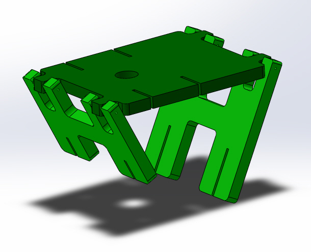
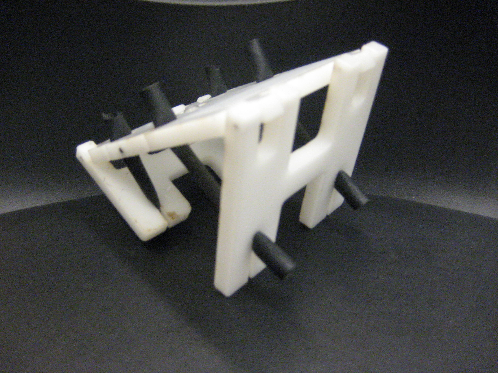
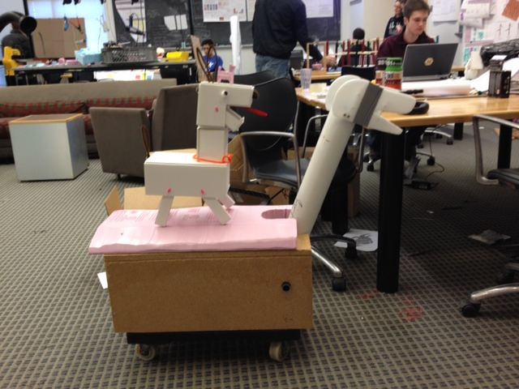
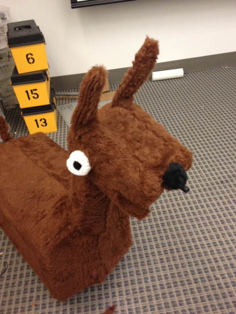
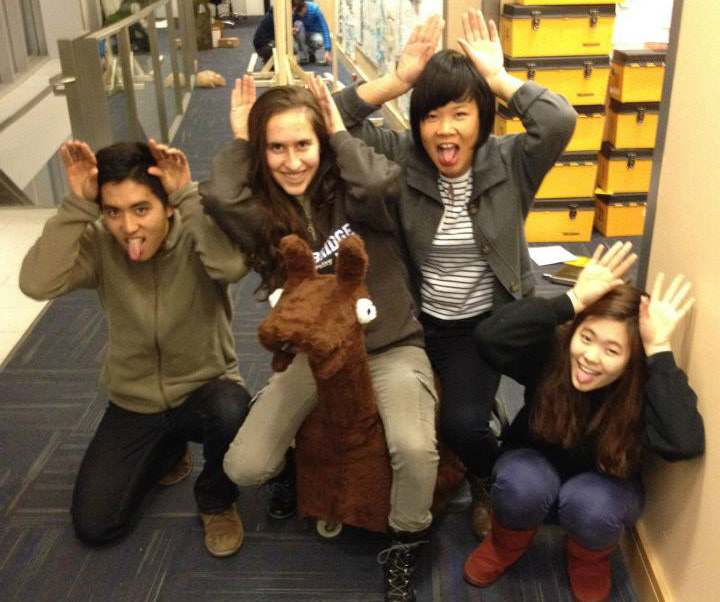

Design Nature
Design nature is a bio-inspired design course.
The Hopper Project
The first project was the hopper project. For the hopper project we had to design a hopping toy to meet a design goal. My design goal was pretty much for my hopper to hop forwards, in retrospect I could have been slightly more adventurous.Using the inspirational power of frogs, I designed the first iteration of my hopper.

After the pieces were laser cut out of plastic and assembled, I quickly realized that there were several design flaws. The elastic tubing I was using was so strong that it was flinging the legs out prematurely, the slot created in the middle of the hopper was suitable for mounting a suction cup, and it was dangerous...I think I cut myself three times on this thing.
So in the spirit of design I proceeded to my second iteration, mainly I removed the upper leg portions of my hopper. But hey! It worked. With this new realization I threw together a nicer version of this hopper in CAD:
 
In the video below my past self will tell you about the design process and demo the two hoppers.
BUT WAIT! THERE'S MORE:
Transporters
Stick around folks because transporters are arguably more fun than hoppers. Transporters is the first major team project for every first year. We had to build a nature inspired transporter game which would be demoed to fourth graders at the end of the semester. Five of us assembled to form The Llama Team, which could be said to be the most awesome team. After brainstorming together on a google doc we came up with Ande the Llama. Here's our backstory:
Up in the Andes, in a remote village lives Ande, the sharp-spitting llama. One day he was bitten by a radioactive llama while he was lollygagging in the meadow. And now he has the ability to spit like no other llama can.
Ande is a friendly llama and allows children to sit on him, but when radioactive llamas come his way, he must spit at them to protect his village. Luckily, llamas have been used as guard animals for hundreds of years and have keen abilities to keep others safe. Thus it is up to you to prevent the downfall of his village and your home by working together with Ande and become the heroes of your villages.
Ande is a friendly llama and allows children to sit on him, but when radioactive llamas come his way, he must spit at them to protect his village. Luckily, llamas have been used as guard animals for hundreds of years and have keen abilities to keep others safe. Thus it is up to you to prevent the downfall of his village and your home by working together with Ande and become the heroes of your villages.
I was in charge of scheduling due to my innate nature to be a concrastintaor. I created a master schedule (Gantt chart) which dictated soft and hard deadlines for our project and made sure that we had everything we needed for each design review (which are super fun :o). Now that we're on top of our stuff, let's move on to build.
We first built a sketch model out of foam core before moving on to our first (and final) full sized prototype. We hid a sprayer water tank inside the body, and fed the nozzle through the neck into the head. The spitting action is triggered by pulling the neck upwards. Our system of bungee cords and pipe-cleaners, would pull our nozzle handle every time the neck moved. Spit.

Now don't get me wrong here, that "llama" is pretty sketchy. That's why we had to cover it in some fur to convince those 4th graders that we actually built a llama and not a box with a weird tube thing sticking out of it.

Wow, what a smart looking llama...gratuitous action video.
And of course, a team photo:

From left to right: Kevin, Mafalda, Me, Inseong. Missing: Danny.